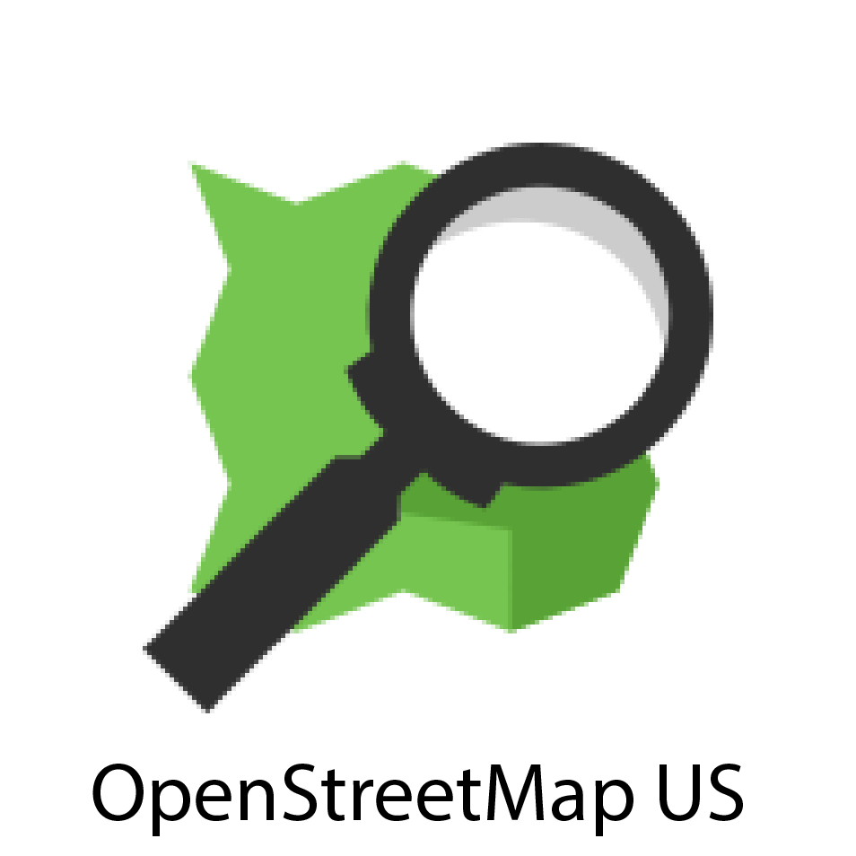
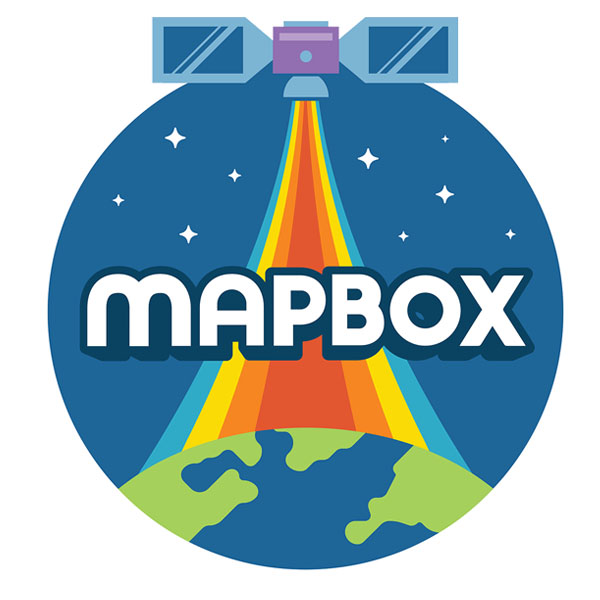

Maps Camp
Saturday July 9, 2016 @ United Nations HQ
Come and join 250 fellow geo-enthusiasts at the first ever Maps Camp on July 9th, 2016 at the UN. We're putting together an exciting day to discuss how Open Source and the Mapping/GIS world benefit one-another.
There'll be a mix of presentations, panels, a workshop, and a doctor's office where you can sit down with seasoned experts to discuss your projects. So whether you merely enjoy learning through maps or are a seasoned geo-professional, there'll be a ton to entertain you all day long.
Please review the UN security rules: we want you all to have a wonderful day, and starting it off by not getting in would really put a dampener on the rest of it!
Schedule*
* subject to change-
9:00
Registration/Introduction -
9:45
The data behind the mapsEric Brelsford @ebrelsfordEric is a software developer, a mapmaker, and a teacher. He will talk about the way data drives maps and the story behind some maps that he has been involved in making. -
10:15
What is GPS?Jason Y. Kim gps.govJason Kim from the U.S. Government's National Coordination Office for Space-Based Positioning, Navigation, and Timing (www.gps.gov) will present an overview of the Global Positioning System (GPS), including how it works, its current performance, plans for the future, and how the government manages GPS as a National asset.Rick Hamilton US Coast GuardAs a DOD Air Force operated system, who represents the public in the U.S. Global Positioning System (GPS) program? Who advocates for the civil use of GPS? What kind of problems are being caused by the illegal use of GPS jammers and what issues are affecting the public's proper use of GPS mapping?Daniel M. Sheehan @nygeogGPS in Research in the Urban Environment. -
11:00
Break! -
11:15
Building enterprise apps with Open SourcePeter Batty @pmbattyThis presentation will discuss enterprise web mapping and mobile applications that we've been developing for large utilities and communications companies, based on a number of open source geospatial components, including PostGIS, GeoServer and Leaflet. It will talk about why we chose to use open source and the benefits we’ve seen from that - and will also talk about how most of our projects use a mix of open and closed source elements. It will also discuss ideas on how to create extremely easy to use but still powerful applications, using approaches inspired by consumer web mapping sites rather than traditional GIS. -
11:45
Communities of DataTyler Radford @TylerSRadfordRaphael Dumas @DumasRaphael -
12:15
Workshop/Doctor's Office -
1:00
Lunch! (provided) -
2:00
Citizen ScienceBronwen Densmore Public Lab -
2:30
Open Source Time and SpaceBert Spaan @bertspaanThe NYC Space/Time Directory will make urban history accessible through the kinds of interactive, location-aware tools used to navigate modern cityscapes. It will provide a way for scholars, students, and enthusiasts to explore New York City across time periods, and to add their own knowledge and expertise.
Over the past five years, NYPL Labs has worked on many digitization, crowdsourcing, and digital cartography projects, all aiming to make the collection of the New York Public Library more accesible. The NYC Space/Time Directory will build on top of those efforts, and it will create new connections between previously unconnected library collections and data sources. -
3:00
[panel]Philosophies of Open SourceJulian Simioni @juliansimioni | Courtney Claessens @sidewalkballet | Emma Grasmeder @emma_gras | Santiago Giraldo @namessanti | Moderator: Peter Batty @pmbatty -
3:45
Break! -
4:00
Photo Map the World (Start Here)Janine Yoong @janineyoong -
4:30
[panel]What's next for Open Source and Mapping?Jeff Ferzoco @zingbot | Lyzi Diamond @lyzidiamond | Courtney Claessens @sidewalkballet | Peter Batty @pmbatty | Alyssa Wright @alyssapwrightIndustry mavens together onstage to talk and enlighten about the big picture of what's next in mapping. -
5:15
Wave Goodbye!
Sponsors
 Lunch will be provided courtesy of the cool folks above. This event wouldn’t be possible without their financial support and the tireless efforts of the Open Camps organizers.
Code of Conduct
All MapScamps are expected to follow the Open Camps Code of Conduct. If following this seems silly, please don’t attend!
Contact
You can reach out to @maps_camp on twitter or send us an email to get in touch. If you’d like to help organize, check out our open GitHub issues where we are discussing speakers, sponsorships, etc!